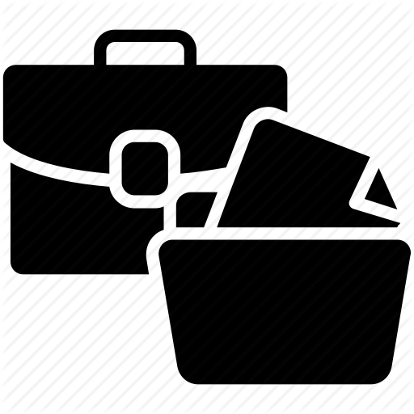

Portfölj
Titta lite på mitt senaste arbete jag har gjort
Webbdesign
Hemsida
Min hemsida jag har byggt är den som ni är inne i just nu. Den är byggd på HTML, CSS och JavaScript
View details

Projekt
Skolarbete
På GitHub kommer jag att lägga upp arbete från universitetet samt projekt jag sitter med hemma på fritiden.
View details